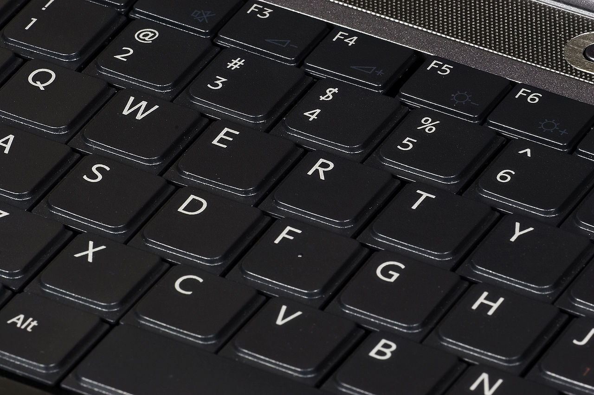
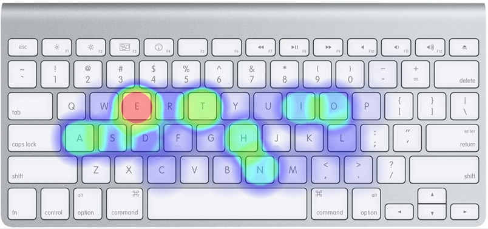
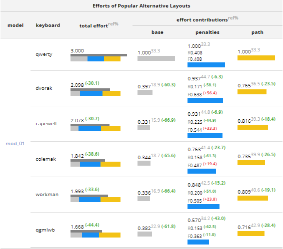

Доклад о самом популярном фреймворке в IT, на котором, кажется, пишут
все — о клавиатурной раскладке.

Интро
Spoilers
Научился полному слепому вводу
Наконец достиг 200 символов в минуту
Понизил коэффициент ошибок с ~5%/~10% до <2%
НЕПРИКОСНОВЕННОСТЬ ЛИЧНОЙ КЛАВИАТУРЫ
Причины сменить раскладку
Период обучения слепому вводу
Часто используемые символы

Клавиши для пунктуации
Ассоциативная связь букв
Нужно дважды учиться слепому вводу
Краткая история времени QWERTY
Американский инженер Шолес с коллегами создавал пишущие
машинки с конца 1860-х.
Сегодня QWERTY находится в суперпозиции. Она и жуткий анахронизм и
признанный стандарт.
Так исторически сложилось
1874, Remington No.1, первая коммерчески успешная
печатная машинка, которая представила QWERTY;
1961, IBM Selectric , влиятельная электрическая
машинка;
1985, IBM the Model M, компьютерная клавиатура
ставшая каноном.
Л — Локализатион
Как понять, что раскладка лучше?
Исследования
Существующие исследования неубедительны в отношении того,
действительно ли раскладки предлагают какие-либо реальные выгоды.
Некоторые исследования допускают, что для опытного
наборщика текста раскладка не имеет значения.
Я выбрал подход Мартина Кривински, канадского ученого в области
биоинформатки.
Он создал математическую модель и клавиатурный
оптимизатор на ее основе — Carpalx. Оптимизатор призван
минимизировать усилия при печати и снижать напряжение на запястья.
Про CTS carpal tunnel syndrome
Carpalx
С помощью Carpalx Мартин сопоставил существующие раскладки, а также
сгенерировал оптимизированные раскладки.

Факторы не учитываемые в исследованиях
Привычные горячие клавиши
Факторы не учитываемые в исследованиях
Скорость освоения слепого ввода, скорость печати и среднее количество
ошибок
Если не QWERTY, то кто?*
1936 Dvorak
2006 Colemak.
Русские оптимизированные раскладки
Диктор и раскладка Зубачева
Типографская раскладка Бирмана
Мефодица
Сравнительная таблица
ФИЧИ
QWERTY
Dvorak
Colemak
Горячие клавиши
+
-
частично
Для слепого ввода
-
+
+
Эргономичность
-
+
+
Доступность
+
+
частично
Мой монстр
Английская — модернизированная QGMLWB
Русская — фонетическая QGMLWB
Фонетическая означает транслит английских букв на
русский
Заключение
Мы живем с очевидной данностью, но ничто не вечно.
Стоит подвергать сомнению привычные веши чтобы дальше двигать
прогресс.
Все раскладки сосредоточены на перетасовке клавиш на изначальной
форме клавиатуры IBM PC.
Полнoценным решением будет исследование обшей
эргономичности клавиатуры и ее переработка. Такие исследования есть.